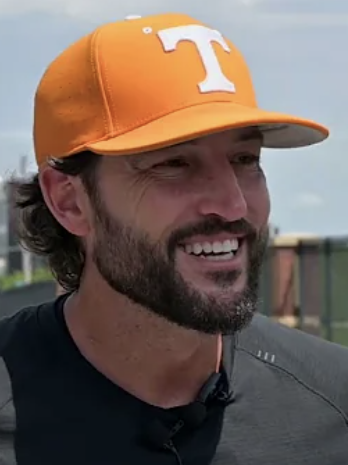

I Didn't Like the Tony Vitello Hire, and I'm Not Going to Pretend Otherwise
The Giants had a chance to make a serious, grown-up baseball decision. Instead they made a headline. Bold is not the same as smart.

Let me say the quiet part first, because that is what this column is for. When the Giants hired Tony Vitello as their manager on October 22, I did not feel excited, and I did not feel intrigued. I felt like I was watching a franchise reach for a headline instead of a plan. Vitello is a genuinely great college coach. That is not the argument. The argument is that "great college coach" and "ready to manage a big-league clubhouse" are two very different sentences, and the Giants just bet a serious chunk of their next three years on pretending they are the same thing.
Here is the fact that the team wants you to read as bold and I read as a red flag: Vitello is the first person in baseball history to go straight from running a college program to managing a major-league team with no professional coaching experience of any kind. None. Not a year as a big-league bench coach, not a summer running a Triple-A dugout, not a single day inside the pro grind. That is not a resume gap you wave away with a nice press conference. That is the entire middle of the job that everyone else in the league had to actually do first.
And do not misunderstand me about Tennessee, because the record is loud. He turned the Volunteers into a national powerhouse and won the College World Series in 2024, their first ever, with three trips to Omaha in four years. That is a real builder's resume. But college baseball and the big leagues are not the same sport wearing different hats. In Knoxville he recruited his roster, controlled the culture, and coached kids who were terrified of losing their scholarship and desperate to be there. In San Francisco he is going to walk into a clubhouse of grown men with guaranteed contracts, agents, service time, and their own opinions about a 47-year-old rookie skipper who has never sat in a big-league dugout. The rah-rah that lights up a college program can curdle fast in a room like that.
What bothers me most is the context the Giants keep dodging. This is a franchise that just finished .500 and has missed the playoffs in eight of the last nine years. That is not a "we are one culture guy away" situation. That is a roster and a run-prevention problem, a here-is-the-actual-baseball problem. When you are that stuck, the responsible move is a proven baseball mind who can steady a veteran clubhouse and squeeze wins out of a flawed roster tomorrow, not a fascinating experiment who needs a year just to learn how a big-league season is shaped. Buster Posey's front office had its pick of experienced options, and it chose the swing-for-the-fences story instead of the sturdy answer.
I also cannot shake the feeling that this hire is aimed partly at the wrong audience. A splashy college name generates buzz, sells a few tickets in the spring, and gives everyone a fresh narrative to write. But the Giants do not need buzz. They need to win baseball games in September, the exact games this column has been begging Oracle Park to host again. A great story in November means nothing if it turns into a confused dugout in August.
Could I be wrong? Of course, and I will say it plainly so nobody accuses me of ducking it later. Maybe Vitello is a natural, maybe the modern game rewards a relentless recruiter-motivator more than it used to, and maybe in two years I am eating this column with a smile. If he wins, I will be first in line to admit the Giants saw something I did not. But that is a hope, not a plan, and hope is exactly what has been running this team into the same .500 wall for the better part of a decade.
So no, I did not like the Tony Vitello hire. Not because he is a bad coach, but because it felt like a franchise choosing the interesting answer over the correct one, again, at the exact moment it could not afford to. The Giants did not need to be brave. They needed to be right. Those are not the same thing, and until Vitello proves otherwise on a big-league field, I am going to keep saying so.
More coverage: Giants section · Columns · Bay Area Sports Blog home